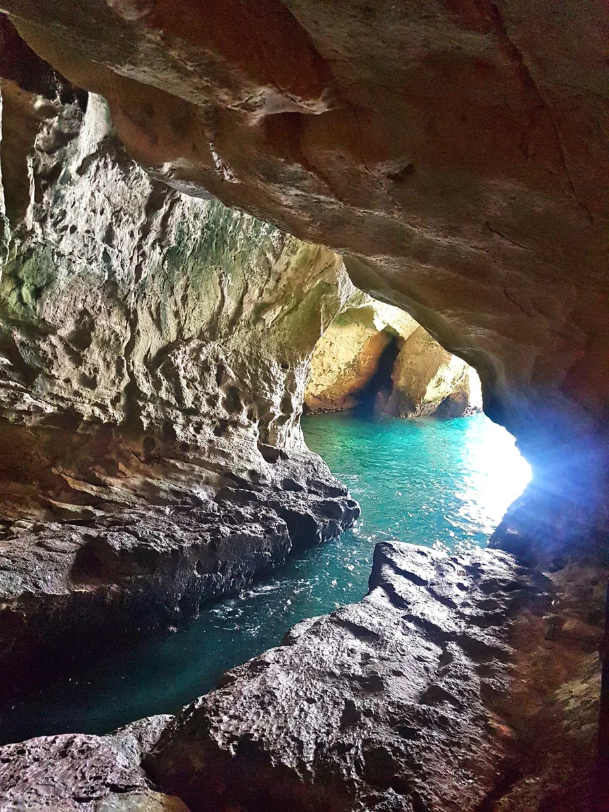
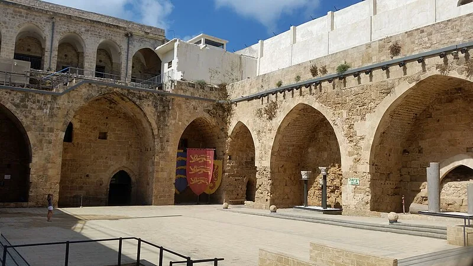
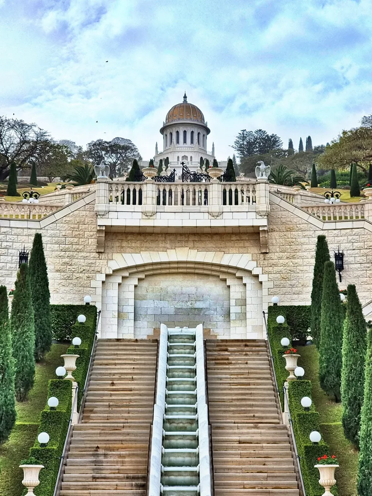
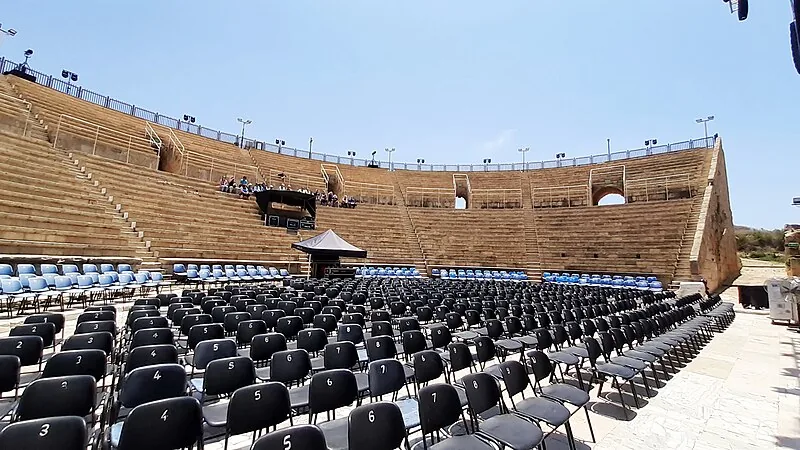
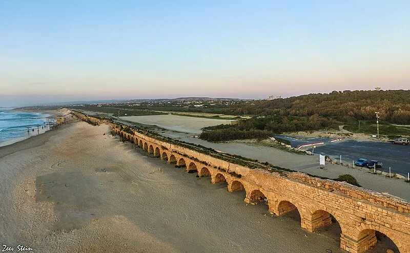
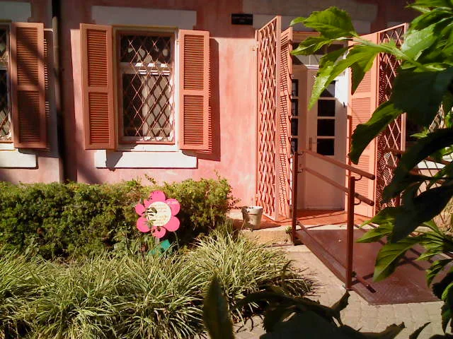
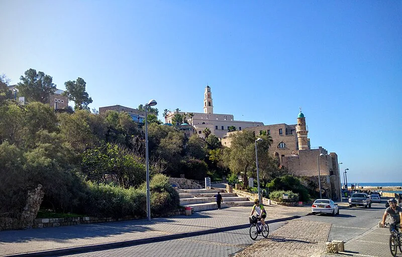
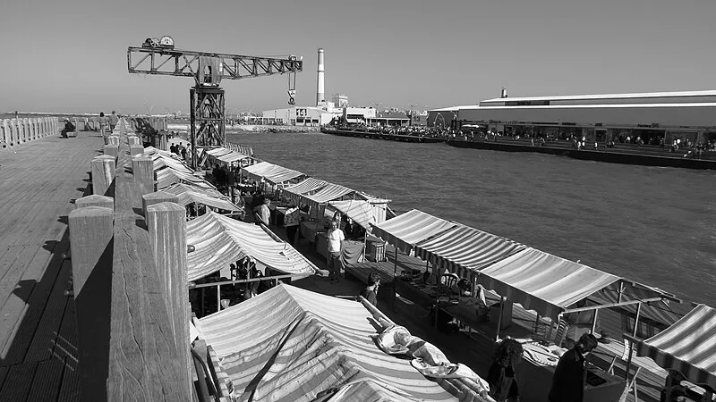
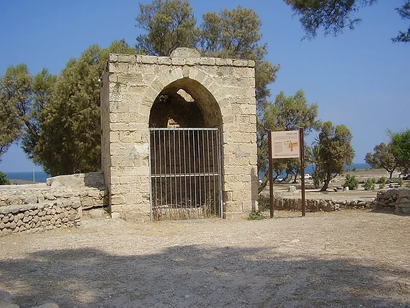
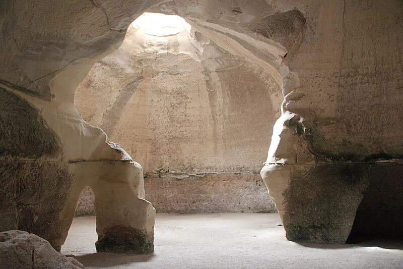

גבולות ומבנה
מישור החוף משתרע מראש הנקרה בצפון ועד רצועת עזה בדרום. אורכו כ־190 ק״מ ורוחבו משתנה מכ־4 ק״מ בצפון ועד כ־40 ק״מ בדרום.
הרצועה נקטעת בשני מקומות מרכזיים: רכס ראש הנקרה ורכס הכרמל.
תיירות לבגרות זמין רק למשתמשים מחוברים דרך כיתה פלוס.
כניסה דרך כיתה פלוסרצועה מישורית לאורך הים התיכון, מראש הנקרה בצפון ועד רצועת עזה בדרום. היחידה עוקבת מצפון לדרום אחר הנוף, הערים ואתרי התיירות המרכזיים.
לפני שמכירים את האתרים, מבינים את המבנה של מישור החוף ואת ההבדל בין סוגי החופים.
מישור החוף משתרע מראש הנקרה בצפון ועד רצועת עזה בדרום. אורכו כ־190 ק״מ ורוחבו משתנה מכ־4 ק״מ בצפון ועד כ־40 ק״מ בדרום.
הרצועה נקטעת בשני מקומות מרכזיים: רכס ראש הנקרה ורכס הכרמל.
אופייני לדרום: חוף רחב, ישר וחולי.
אופייני לצפון: מפרצונים, גלים ולוחות גידוד.
המישור הרחב, הקרבה לים, אפשרויות הבנייה והחקלאות וצירי התחבורה המרכזיים סייעו להתפתחות רצף עירוני גדול. לכן מרבית תושבי ישראל מתגוררים במישור החוף.
בתיאור נוף משלבים לפחות שלושה רכיבים: תבליט מישורי, קו חוף ישר וחולי בדרום, ורוחב ההולך וגדל מצפון לדרום.
מסע מראש הנקרה דרך עכו ועד חיפה, תוך חיבור בין נוף, היסטוריה ומגזרי תיירות.



הנקודה הצפון־מערבית של ישראל. הנקרות הן מערות גיאולוגיות שנוצרו מפעולת גלי הים בסלע הגיר.
עיר מורשת עולמית ובה שכבות צלבניות ועות׳מאניות.
אתר מורשת עולמית משנת 2008 ובו 19 טרסות על מדרון הכרמל.
מערת אליהו קדושה ליהודים, נוצרים, מוסלמים ודרוזים. מעליה המנזר הכרמליתי סטלה מאריס.
האזור מאפשר לבנות מסלול מגוון: תופעת טבע בראש הנקרה, עיר היסטורית בעכו, אתרים דתיים בחיפה ושמורות ומבצרים בגליל המערבי.
מערת אליהו מושכת בני ארבע דתות, סטלה מאריס מושך צליינים נוצרים, והגנים הבהאיים מושכים מאמינים ותיירים כלליים.
בית הכלא הבריטי בעכו שבו נכלאו לוחמי אצ״ל ולח״י; במקום תא הגרדום וסיפור פריצת הכלא.
מנהרה תת־קרקעית של המסדר הטמפלרי המחברת בין המצודה לנמל עכו.

מוזיאון לשואה שהקימו ניצולים שלחמו בגטאות.

לגונות וברכות ים, שרידי כפר דייגים, חוף ושטחי קמפינג.

מבצר צלבני בנחל כזיב ובו שרידי מגדל וחומות.

שרידים צלבניים ועות׳מאניים וסיפור מלחמת העצמאות.
מהעיר הרומית של הורדוס אל מושבות העלייה הראשונה והכפרים הדרוזיים.



המלך הורדוס בנה את העיר לכבוד הקיסר הרומי. בין אתריה: התיאטרון הרומי, האקוודוקט, ההיפודרום, הרחוב הצלבני וארמון הורדוס.
מושבת העלייה הראשונה משנת 1882. בית אהרנסון מספר את סיפור מחתרת ניל״י, דרך היין מחברת ליקבים ורמת הנדיב מנציחה את הברון רוטשילד ורעייתו.
הכפרים הדרוזיים הגדולים בכרמל מציעים שווקים, מטבח אותנטי, מורשת ואירוח מסורתי.
ייחודה של קיסריה אינו רק בעתיקות. התיאטרון עדיין משמש למופעים והאקוודוקט ניצב על חוף פעיל — חיבור בין מורשת, תרבות ונופש.
זכרון יעקב משמרת את בית אהרנסון, רחובות המושבה ויקבים. אלה הופכים סיפור התיישבותי למוקדי ביקור חיים.
כ־3,500 מקומות; נבנה בתקופת הורדוס ומשמש גם כיום למופעים.
אמת מים רומית באורך כ־20 ק״מ שהובילה מים מהכרמל לקיסריה.
מתחם למרוצי סוסים ושרידי ארמון מפואר על קו הים.
בית המשפחה ומרכז סיפורה של מחתרת ניל״י.

גני זיכרון וקברי הברון רוטשילד ורעייתו.
שוק, מטבח, מורשת ואירוח המציגים את התרבות הדרוזית.
יחידה עירונית המחברת נמל עתיק, שכונות ראשונות, העיר הלבנה, תרבות ופנאי.



השכונה היהודית הראשונה מחוץ לחומות יפו.
נבנה לכבוד 25 שנות שלטון הסולטן העות׳מאני.
הגרעין שממנו התפתחה תל אביב.
יפו אוחדה עם תל אביב.
עיר עתיקה ובה נמל דייגים פעיל, סלע אנדרומדה, מגדל השעון ושוק הפשפשים.
יותר מ־4,000 מבנים בסגנון הבינלאומי, שנבנו בעיקר בשנות השלושים ותוכננו כחלק מתפיסת ״עיר גנים״.
חופי ים, חיי לילה, שווקים, אדריכלות, מוזיאונים, קולינריה ואירועים יוצרים מוצר עירוני מגוון המתאים לקהלים שונים.
יפו מציעה נמל עתיק, שוק ומורשת; תל אביב מציעה עיר מודרנית, תרבות והעיר הלבנה. יחד נוצר מסלול המחבר עבר והווה.
נמל ששוקם והפך למתחם פנאי ותרבות.

מושבה טמפלרית משנת 1871 ובה עשרות מבנים ששומרו.

שוק מזון מרכזי ולצדו מדרחוב ויריד אמנים.

הריאה הירוקה העירונית ובה אגם ומתקני פנאי.

מוזיאון אינטראקטיבי לסיפור העם היהודי והתפוצות.

אתרי מורשת על המאבק להקמת המדינה.
ארכאולוגיה, חוף ומערות — ומה מייחד את הדרום מול מוקדי תיירות אחרים.



פארק ארכאולוגי ובו השער הכנעני המקושת, מהקדומים בעולם. ייחוד המקום בחיבור שבין ארכאולוגיה, חוף ים וטיילת צוק.
אתר מורשת עולמית ובו מערות פעמון חצובות, קולומבריום, קברים, מקוואות ופעילויות ארכאולוגיות.
שתיהן מציעות חוף, מלונות וקניות. אשקלון מוסיפה פארק ארכאולוגי ושער כנעני, ואילו נתניה מזוהה יותר עם תיירות חוף ועם מסורת ליטוש היהלומים.
האתר נמצא באזור המעבר בין מישור החוף להר. הקירטון הרך איפשר חציבת מערות ששימשו למחצבות, גידול יונים, קבורה וטהרה.
עשרת המשחקים שובצו בתוך חמש יחידות הלימוד לפי המיומנות שהם מתרגלים. כאן אפשר לראות מה הושלם ולחזור ישירות ליחידה שדורשת חיזוק.
בחרו את שם האתר המופיע בתמונה. לאחר הזיהוי תקבלו גם את פרט המפתח שכדאי לזכור לבגרות.
עברו על כל השקופיות כדי להשלים את הדף.
20 שאלות מהחומר של היחידה. ציון 60 ומעלה מסמן את הדף; אפשר לנסות שוב ללא הגבלה.
כל סעיף נבדק בנפרד מול המחוון ונשלח לבוט למשוב. רק כאשר כל שלושת הסעיפים עברו, השאלה השלמה נחשבת כהושלמה.